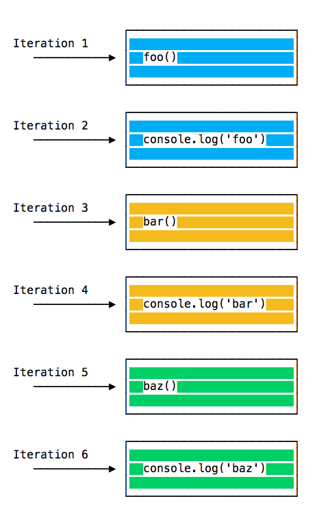

Цикл событий - это важнейшая часть Node.js.
Почему? Потому что это обуславливает асинхронность Node.js, т.е. то, почему он имеет неблокирующий ввод/вывод.
Код в Node.js выполняется в одном потоке. Одновременно выполняется только одна задача.
Это ограничение приносит большую пользу, поскольку вам не приходится заботиться об устранении конкуренции между потоками.
Вам всего лишь следует обращать внимание на то, как написан ваш код и избегать всего, что может заблокировать поток, например, синхронных сетевых соединений или бесконечных циклов.
Обычно, каждая вкладка браузера имеет собственный цикл событий для изоляции процессов во избежание того, что отдельная страница с бесконечными циклами или сложными вычислениями заблокирует работу всего браузера.
Среда выполнения кода управляет конкуренцией циклов событий, например, с целью обработки обращений к разным прикладным интерфейсам. Веб-воркеры имеют собственный цикл событий.
В Node.js вам следует заботиться о выполнении кода в одном потоке и использовать неблокирующие средства.
Любой JS-код, выполнение которого занимает много времени, заблокирует выполнение любого другого кода на странице, даже пользовательский интерфейс: пользователь не сможем нажимать на кнопки, переходить по ссылкам, прокручивать страницу и т.д.
Почти все примитивы ввода/вывода в JavaScript являются неблокирующими. Сетевые запросы, работа с файловой системой и т.п. Для решения проблемы блокирующей природы JavaScript применяются функции обратного вызова, промисы и async/await.
Стек вызовов - это очередь, работающая по принципу LIFO (last in, first out - последним вошел, первым вышел).
Цикл событий периодически проверяет стек вызовов с целью определения наличия в нем функций для выполнения.
При обнаружении такой функции, цикл событий помещает ее в стек вызовов и выполняет.
Вам должен быть хорошо известен стек-трейс (stack trace) ошибок в отладчике или консоли браузера. Браузер определяет название функции по стеку вызовов для предоставления информации о том, какая функция вызвала исключение:
Рассмотрим пример:
const bar = () => console.log('bar')
const baz = () => console.log('baz')
const foo = () => {
console.log('foo')
bar()
baz()
}
При запуске кода сначала вызывается foo(). В foo() сначала вызывается bar(), затем baz().
Cтек вызовов выглядит так:

Цикл событий на каждой итерации проверяет, имеются ли в стеке вызовов функции для выполнения:

Это происходит до тех пор, пока стек не окажется пустым.
Приведенный пример не представляет особого интереса: JavaScript определяет наличие функций в стеке вызовов и выполняет их по очереди.
Как отложить выполнение функции до освобождения стека вызовов?
Использование setTimeout(() => {}) приводит к тому, что вызванная функция выполняется после других.
Рассмотрим пример:
const baz = () => console.log('baz')
const bar = () => console.log('bar')
const foo = () => {
console.log('foo')
setTimeout(bar, 0)
baz()
}
foo()
Этот код выводит в консоль следующее:
foo
baz
bar
При запуске кода сначала выполняется foo(). В foo() мы сначала вызываем setTimeout(), передавая bar в качестве аргумента и указывая на необходимость немедленного выполнения, устанавливая значение счетчика равным 0. Затем мы вызываем baz().
Стек вызовов выглядит так:

Вот порядок выполнения функций:
Почему так происходит?
При вызове setTimeout() браузер или Node.js запускают таймер. Поскольку в нашем случае таймер истекает немедленно (мы установили значение счетчика равным 0), функция обратного вызова помещается в очередь сообщений.
В очередь сообщений попадают все пользовательские события, такие как события мыши или клавиатуры, а также ответы на запросы, перед тем, как код получить возможность их обработать. Также сюда попадают события DOM, например, load.
Цикл событий отдает приоритет стеку вызовов и сперва выполняет находящиеся там функции, и лишь после того, как стек опустеет, цикл обращается к очереди сообщений.
Мы не ждем выполнения таких функция, как setTimeout() или fetch(), поскольку они предоставляются браузером и имеют собственные потоки для выполнения. Например, если установить значение счетчика равным 2 секундам, нам не придется ждать эти 2 секунды, это произойдет в другом месте.
ECMAScript 2015 представил концепцию очереди задач, которая используется промисами (также представленными в этом стандарте). Очередь задач представляет собой способ максимально быстрого выполнения результата асинхронной функции без помещения ее в конец стека вызовов.
Промисы, разрешенные перед завершением выполнения текущей функции, будут выполнены следом за этой функцией.
Можно провести аналогию с американскими горками в парке развлечений: очередь сообщений помещает вас в конец очереди, позади других людей, и вам приходится ждать своей очереди, а очередь задач - это специальный билет, дающий вам право прокатиться на аттракционе сразу после окончания предыдущей поездки.
Пример:
const bar = () => console.log('bar')
const baz = () => console.log('baz')
const foo = () => {
console.log('foo')
setTimeout(bar, 0)
new Promise((resolve, reject) =>
resolve('should be right after baz, before bar')
).then(resolve => console.log(resolve))
baz()
}
foo()
Этот код выведет в консоль следующее:
foo
baz
should be right after baz, before bar
baz
Существует большая разница между промисами (и async/await, основанном на промисах) и старыми-добрыми асинхронными функциями типа setTimeout() и другими прикладными интерфейсами среды выполнения кода.